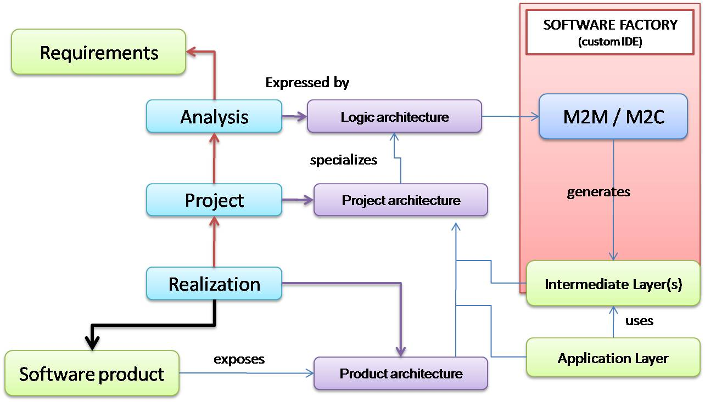

Xtext
Xtext is a professional Open-Source project used in many different industries. It is used in the field of mobile devices, automotive development, embedded systems or Java enterprise software projects and game development, since its main goal is to provide a framework to implement Domain Speci fic Languages (DSL). 
Producing the system: workflow
- Define the meta-model (example: MyDsl.xtext).
- Look at the generation mwe2 file that adopts generator fragments to produce in amodular way speci c parts of the implementation (example: GenerateMyDsl.mwe2).
- Run (the system could ask you to load the ANTLR 3 parser) the mwe2 generator to produce (in the src-gen directory) the Xtext artifacts :Ecore model, editor, parser, serializer, utilty classes for content assist, etc.
Example of genrated artifacts:- MyDsl.ecore: Meta model in Ecore (XML).
- MyDslStandaloneSetup.java: Utilty to initializes the language infrastructure to run in standalone mode.
- MyDslRuntimeModule.java: Utilty to register components to be used at runtime, without the Equinox extension registry.
- MyDslGenerator.xtend: Entry-point fro the user-defined generation.
- MyDslValidator.xtend: Utility to statically validate domain speci c constraints (@Check annotation).
- MyDslScopeProvider.xtend: Utility to define custom scoping description.
- Define a package (it.unibo.xtext.mygenerator) to include the custom generator code.
- Define a (singleton, Java) class SysKb.java to store knowledge about the user model.
- Define a (Xtend) class GenKb.xtend to define utility operations to work with the SysKb in the generation process.
- (Optionally) Define (in Xtend) a class for utilty operations: GenUtils.xtend
- (Optionally) Define a (Java) class GenUtilJava.java to define utility operations to be used in the generation process.
- Decompose the genration process in a set of components, each related to a proper generator interface for some metamodel entity (for the Guice injection)
- Define (in Xtend) the entry point class for the custom generator: MydslMyGen.xtend
- Inject (see Guice injection) the cutom generator into the user-generator entry point: MyDslGenerator.xtend and define the doGenerate method so to execute the custom-generation process.
- Define (in Xtend) the custom generator components: ElementGenerator.xtend
Internal methodology
Running the system
- Excute the editor ( it.unibo.mydsl.ui plugin) including the arguments
-Xmx512m -Xmx384m -XX:MaxPermSize=128m
- Create a conventional Java project.
- Write a sentence of the custom language, by creating a new file in the src directory with mydsl su ffix.
- Promote the (generated) directory src-gen to a source directory